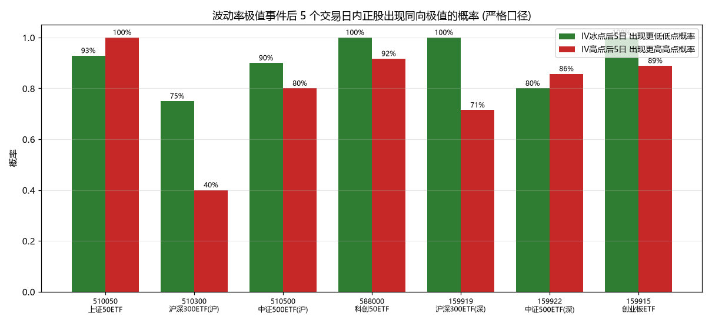
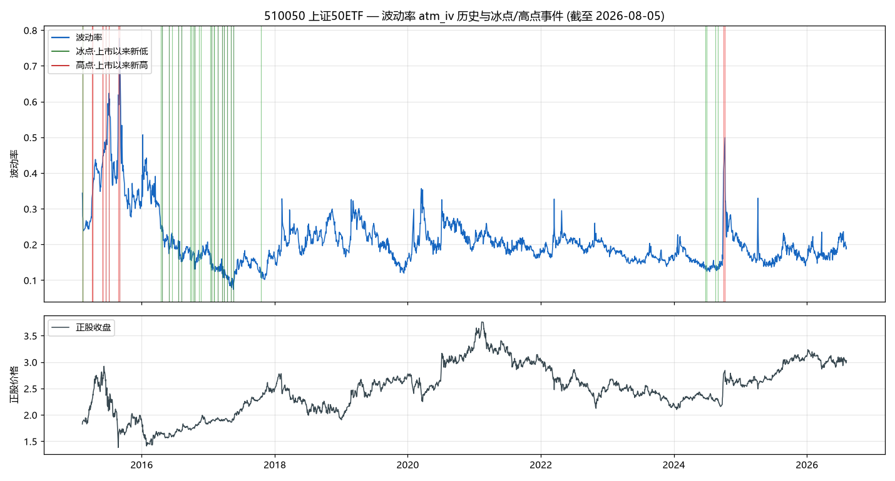
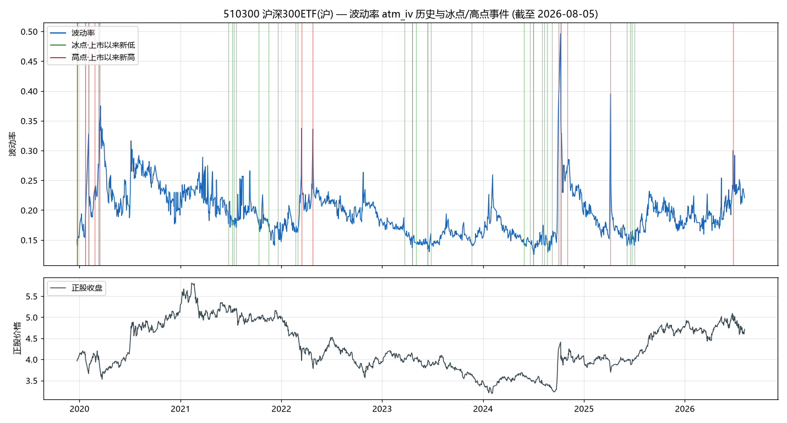
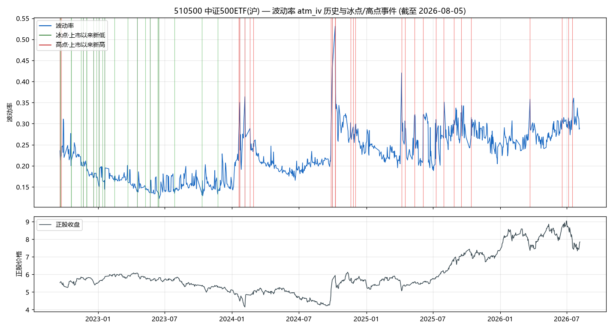
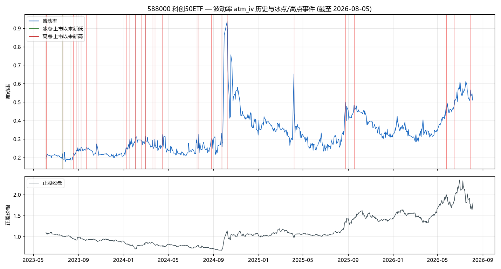
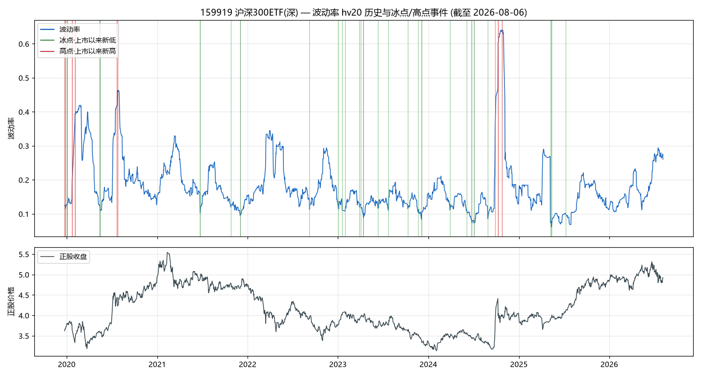
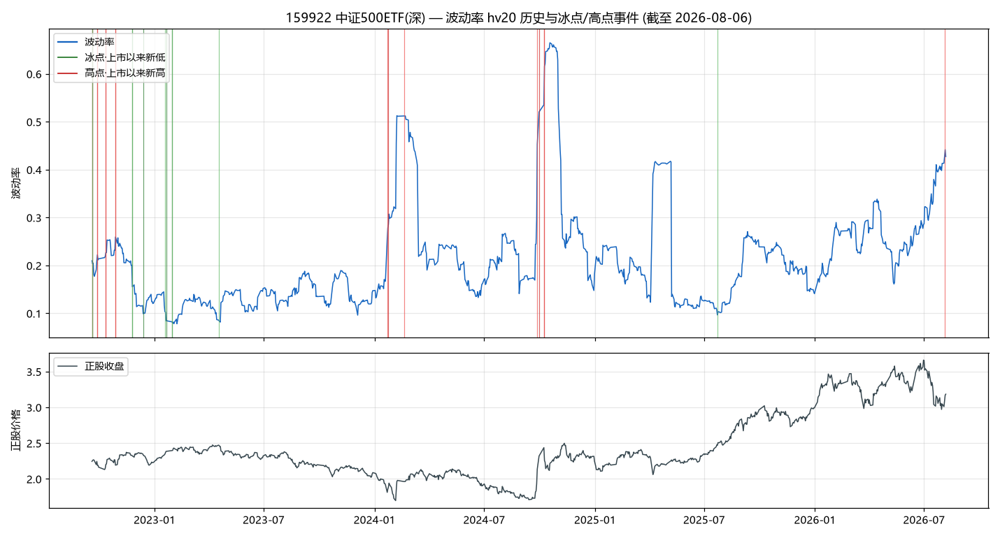
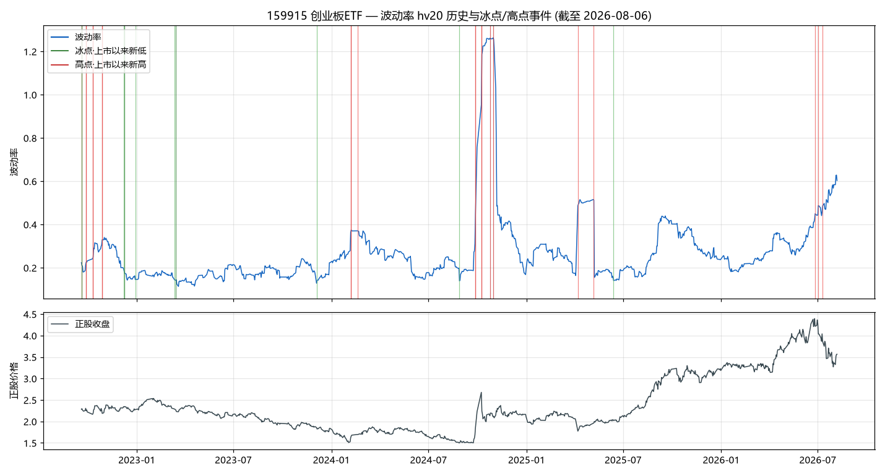

数据截至 2026-08-05 (上交所期权风险指标) / 2026-08-06 (ETF 日线) · 生成时间: 2026-08-06 10:37
| 标的 | 品种 | 数据源 | 样本(交易日) | 起始 | 当前值 | 当前分位 | 历史最低 | P5冰点线 | P10 | P50中位 | P90 | P95高点线 | 历史最高 |
|---|---|---|---|---|---|---|---|---|---|---|---|---|---|
| 510050 | 上证50ETF | IV | 2791 | 2015-02-09 | 19.3% | 51% | 7.4% | 13.4% | 14.5% | 19.2% | 29.4% | 36.7% | 77.7% |
| 510300 | 沪深300ETF(沪) | IV | 1604 | 2019-12-23 | 22.1% | 77% | 12.5% | 14.4% | 15.0% | 19.0% | 24.3% | 26.6% | 49.6% |
| 510500 | 中证500ETF(沪) | IV | 939 | 2022-09-19 | 28.9% | 86% | 12.2% | 14.3% | 15.0% | 22.0% | 30.0% | 31.3% | 53.1% |
| 588000 | 科创50ETF | IV | 769 | 2023-06-05 | 50.9% | 93% | 17.6% | 20.6% | 21.3% | 30.5% | 46.1% | 53.7% | 93.7% |
| 159919 | 沪深300ETF(深) | HV20 | 1605 | 2019-12-23 | 26.0% | 85% | 6.2% | 10.0% | 11.0% | 16.0% | 28.4% | 33.6% | 64.0% |
| 159922 | 中证500ETF(深) | HV20 | 940 | 2022-09-19 | 42.7% | 95% | 7.8% | 11.0% | 11.8% | 18.7% | 31.8% | 41.6% | 66.5% |
| 159915 | 创业板ETF | HV20 | 940 | 2022-09-19 | 60.3% | 97% | 11.3% | 14.6% | 15.7% | 23.2% | 41.6% | 50.4% | 126.3% |

| min | P1 | P5 | P10 | P25 | P50 | P75 | P90 | P95 | P99 | max | 均值 | 标准差 |
|---|---|---|---|---|---|---|---|---|---|---|---|---|
| 7.40% | 10.55% | 13.36% | 14.50% | 16.34% | 19.17% | 22.59% | 29.42% | 36.70% | 49.20% | 77.74% | 20.87% | 7.50% |
当前值 19.28%，处于历史 51% 分位（2026-08-05 收盘口径）。经验参考：波动率 < P10 视为冰点区（卖方性价比低/买方入场区），> P90 视为高位区（买方风险高/卖方性价比高）。
| 事件类型 | 事件数 | 出现更低低点 | 出现更低收盘 | 窗口最低·平均 | 窗口最低·中位 | 窗口最低·最差 | T+5收盘·平均 | T+5收盘·中位 | T+5上涨概率 | 出现更高高点 | 出现更高收盘 | 窗口最高·平均 | 窗口最高·中位 | 窗口最高·最好 |
|---|---|---|---|---|---|---|---|---|---|---|---|---|---|---|
| 冰点·上市以来新低 | 14 | 92.9% | 42.9% | -0.8% | -0.7% | -2.0% | 1.9% | 1.5% | 71.4% | 92.9% | 92.9% | 2.8% | 2.2% | 6.7% |
| 冰点·≤历史P5 | 15 | 93.3% | 66.7% | -1.3% | -1.0% | -4.9% | 0.6% | 0.9% | 60.0% | 86.7% | 80.0% | 1.7% | 1.5% | 5.0% |
| 高点·上市以来新高 | 6 | 100.0% | 66.7% | -7.3% | -7.1% | -16.6% | 1.8% | 4.4% | 66.7% | 100.0% | 100.0% | 7.3% | 7.8% | 12.0% |
| 高点·≥历史P95 | 5 | 80.0% | 60.0% | -3.7% | -5.5% | -7.8% | 6.4% | 8.5% | 60.0% | 80.0% | 80.0% | 11.0% | 10.4% | 25.9% |
冰点·上市以来新低 共 14 次（连续极值日已去重）：
| 事件日 | 当日波动率 |
|---|---|
| 2015-02-09 | 34.38% |
| 2016-04-21 | 23.63% |
| 2016-05-30 | 17.41% |
| 2016-07-22 | 16.10% |
| 2016-08-05 | 15.16% |
| 2016-10-17 | 13.09% |
| 2017-01-20 | 12.77% |
| 2017-02-03 | 12.62% |
| 2017-02-23 | 12.36% |
| 2017-03-17 | 12.04% |
| 2017-03-30 | 10.59% |
| 2017-04-14 | 10.28% |
| 2017-05-05 | 8.35% |
| 2017-05-18 | 7.40% |
高点·上市以来新高 共 6 次（连续极值日已去重）：
| 事件日 | 当日波动率 |
|---|---|
| 2015-02-09 | 34.38% |
| 2015-04-07 | 34.65% |
| 2015-06-02 | 44.83% |
| 2015-06-19 | 49.20% |
| 2015-07-06 | 62.38% |
| 2015-09-01 | 77.74% |

| min | P1 | P5 | P10 | P25 | P50 | P75 | P90 | P95 | P99 | max | 均值 | 标准差 |
|---|---|---|---|---|---|---|---|---|---|---|---|---|
| 12.54% | 13.90% | 14.39% | 15.04% | 16.63% | 19.00% | 21.72% | 24.28% | 26.60% | 31.67% | 49.62% | 19.53% | 3.91% |
当前值 22.07%，处于历史 77% 分位（2026-08-05 收盘口径）。经验参考：波动率 < P10 视为冰点区（卖方性价比低/买方入场区），> P90 视为高位区（买方风险高/卖方性价比高）。
| 事件类型 | 事件数 | 出现更低低点 | 出现更低收盘 | 窗口最低·平均 | 窗口最低·中位 | 窗口最低·最差 | T+5收盘·平均 | T+5收盘·中位 | T+5上涨概率 | 出现更高高点 | 出现更高收盘 | 窗口最高·平均 | 窗口最高·中位 | 窗口最高·最好 |
|---|---|---|---|---|---|---|---|---|---|---|---|---|---|---|
| 冰点·上市以来新低 | 4 | 75.0% | 75.0% | -2.4% | -2.5% | -4.4% | -0.8% | -1.6% | 25.0% | 100.0% | 50.0% | 1.2% | 0.8% | 3.1% |
| 冰点·≤历史P5 | 24 | 91.7% | 75.0% | -2.1% | -1.2% | -11.0% | -0.8% | -0.7% | 45.8% | 87.5% | 70.8% | 0.9% | 0.7% | 3.1% |
| 高点·上市以来新高 | 5 | 80.0% | 60.0% | -6.1% | -9.0% | -11.1% | -2.1% | -2.7% | 40.0% | 40.0% | 40.0% | 1.0% | -0.1% | 6.9% |
| 高点·≥历史P95 | 12 | 100.0% | 66.7% | -3.9% | -2.8% | -11.1% | 0.1% | 1.0% | 50.0% | 83.3% | 66.7% | 3.7% | 4.2% | 10.0% |
冰点·上市以来新低 共 4 次（连续极值日已去重）：
| 事件日 | 当日波动率 |
|---|---|
| 2019-12-23 | 15.04% |
| 2023-04-20 | 13.68% |
| 2023-06-15 | 13.43% |
| 2024-07-02 | 12.79% |
高点·上市以来新高 共 5 次（连续极值日已去重）：
| 事件日 | 当日波动率 |
|---|---|
| 2019-12-23 | 15.04% |
| 2020-01-23 | 19.47% |
| 2020-02-03 | 32.79% |
| 2020-03-13 | 34.21% |
| 2024-10-08 | 49.62% |

| min | P1 | P5 | P10 | P25 | P50 | P75 | P90 | P95 | P99 | max | 均值 | 标准差 |
|---|---|---|---|---|---|---|---|---|---|---|---|---|
| 12.22% | 13.52% | 14.30% | 15.04% | 17.90% | 22.02% | 26.78% | 29.97% | 31.25% | 34.68% | 53.11% | 22.50% | 5.58% |
当前值 28.92%，处于历史 86% 分位（2026-08-05 收盘口径）。经验参考：波动率 < P10 视为冰点区（卖方性价比低/买方入场区），> P90 视为高位区（买方风险高/卖方性价比高）。
| 事件类型 | 事件数 | 出现更低低点 | 出现更低收盘 | 窗口最低·平均 | 窗口最低·中位 | 窗口最低·最差 | T+5收盘·平均 | T+5收盘·中位 | T+5上涨概率 | 出现更高高点 | 出现更高收盘 | 窗口最高·平均 | 窗口最高·中位 | 窗口最高·最好 |
|---|---|---|---|---|---|---|---|---|---|---|---|---|---|---|
| 冰点·上市以来新低 | 10 | 90.0% | 90.0% | -2.5% | -3.4% | -4.4% | -1.1% | -1.7% | 40.0% | 70.0% | 60.0% | 1.1% | 1.2% | 3.2% |
| 冰点·≤历史P5 | 13 | 92.3% | 76.9% | -1.6% | -2.1% | -3.4% | 0.1% | -0.1% | 46.2% | 100.0% | 69.2% | 1.3% | 1.2% | 3.4% |
| 高点·上市以来新高 | 5 | 100.0% | 60.0% | -5.4% | -2.2% | -12.8% | 0.1% | -2.0% | 40.0% | 80.0% | 80.0% | 8.1% | 6.7% | 22.7% |
| 高点·≥历史P95 | 22 | 100.0% | 68.2% | -3.1% | -1.8% | -12.8% | -0.3% | 0.3% | 59.1% | 90.9% | 86.4% | 3.1% | 1.7% | 21.2% |
冰点·上市以来新低 共 10 次（连续极值日已去重）：
| 事件日 | 当日波动率 |
|---|---|
| 2022-09-19 | 23.59% |
| 2022-10-19 | 20.01% |
| 2022-11-21 | 19.92% |
| 2022-12-01 | 18.77% |
| 2022-12-19 | 17.14% |
| 2023-01-03 | 15.23% |
| 2023-01-19 | 14.42% |
| 2023-04-17 | 13.88% |
| 2023-05-22 | 13.60% |
| 2023-06-15 | 13.10% |
高点·上市以来新高 共 5 次（连续极值日已去重）：
| 事件日 | 当日波动率 |
|---|---|
| 2022-09-19 | 23.59% |
| 2024-01-22 | 35.05% |
| 2024-02-05 | 36.40% |
| 2024-09-30 | 43.06% |
| 2024-10-08 | 53.11% |

| min | P1 | P5 | P10 | P25 | P50 | P75 | P90 | P95 | P99 | max | 均值 | 标准差 |
|---|---|---|---|---|---|---|---|---|---|---|---|---|
| 17.57% | 18.78% | 20.65% | 21.35% | 24.10% | 30.55% | 37.64% | 46.09% | 53.70% | 61.63% | 93.70% | 32.37% | 10.66% |
当前值 50.92%，处于历史 93% 分位（2026-08-05 收盘口径）。经验参考：波动率 < P10 视为冰点区（卖方性价比低/买方入场区），> P90 视为高位区（买方风险高/卖方性价比高）。
| 事件类型 | 事件数 | 出现更低低点 | 出现更低收盘 | 窗口最低·平均 | 窗口最低·中位 | 窗口最低·最差 | T+5收盘·平均 | T+5收盘·中位 | T+5上涨概率 | 出现更高高点 | 出现更高收盘 | 窗口最高·平均 | 窗口最高·中位 | 窗口最高·最好 |
|---|---|---|---|---|---|---|---|---|---|---|---|---|---|---|
| 冰点·上市以来新低 | 2 | 100.0% | 100.0% | -3.8% | -3.8% | -4.4% | -1.9% | -1.9% | 0.0% | 50.0% | 0.0% | 0.3% | 0.3% | 0.7% |
| 冰点·≤历史P5 | 2 | 100.0% | 100.0% | -3.8% | -3.8% | -4.6% | -2.5% | -2.5% | 0.0% | 50.0% | 0.0% | 0.0% | 0.0% | 0.7% |
| 高点·上市以来新高 | 12 | 91.7% | 75.0% | -4.0% | -2.7% | -19.4% | 2.9% | -0.8% | 33.3% | 91.7% | 66.7% | 6.5% | 1.8% | 40.9% |
| 高点·≥历史P95 | 20 | 100.0% | 85.0% | -3.7% | -2.1% | -19.4% | 1.7% | -0.1% | 50.0% | 100.0% | 80.0% | 5.6% | 2.5% | 40.9% |
冰点·上市以来新低 共 2 次（连续极值日已去重）：
| 事件日 | 当日波动率 |
|---|---|
| 2023-06-05 | 19.45% |
| 2023-07-18 | 19.35% |
高点·上市以来新高 共 12 次（连续极值日已去重）：
| 事件日 | 当日波动率 |
|---|---|
| 2023-06-05 | 19.45% |
| 2023-07-20 | 22.00% |
| 2023-08-25 | 22.95% |
| 2023-09-08 | 25.53% |
| 2023-10-20 | 27.30% |
| 2024-01-18 | 29.70% |
| 2024-02-02 | 30.40% |
| 2024-02-29 | 31.34% |
| 2024-04-16 | 32.40% |
| 2024-07-23 | 32.50% |
| 2024-09-23 | 33.05% |
| 2024-10-08 | 93.70% |

| min | P1 | P5 | P10 | P25 | P50 | P75 | P90 | P95 | P99 | max | 均值 | 标准差 |
|---|---|---|---|---|---|---|---|---|---|---|---|---|
| 6.15% | 7.44% | 9.98% | 11.02% | 13.27% | 15.97% | 19.91% | 28.40% | 33.58% | 60.37% | 64.04% | 18.17% | 8.42% |
当前值 26.02%，处于历史 85% 分位（2026-08-06 收盘口径）。经验参考：波动率 < P10 视为冰点区（卖方性价比低/买方入场区），> P90 视为高位区（买方风险高/卖方性价比高）。
| 事件类型 | 事件数 | 出现更低低点 | 出现更低收盘 | 窗口最低·平均 | 窗口最低·中位 | 窗口最低·最差 | T+5收盘·平均 | T+5收盘·中位 | T+5上涨概率 | 出现更高高点 | 出现更高收盘 | 窗口最高·平均 | 窗口最高·中位 | 窗口最高·最好 |
|---|---|---|---|---|---|---|---|---|---|---|---|---|---|---|
| 冰点·上市以来新低 | 9 | 100.0% | 66.7% | -1.4% | -1.2% | -3.3% | 0.2% | 0.1% | 55.6% | 88.9% | 77.8% | 1.6% | 1.8% | 3.3% |
| 冰点·≤历史P5 | 19 | 94.7% | 57.9% | -1.1% | -0.6% | -3.5% | 0.5% | -0.1% | 47.4% | 100.0% | 84.2% | 2.4% | 2.1% | 7.3% |
| 高点·上市以来新高 | 7 | 100.0% | 57.1% | -3.9% | -1.4% | -12.0% | -0.1% | 0.2% | 57.1% | 71.4% | 71.4% | 2.3% | 1.8% | 7.4% |
| 高点·≥历史P95 | 7 | 100.0% | 57.1% | -4.3% | -1.4% | -12.0% | -0.8% | 0.2% | 57.1% | 71.4% | 71.4% | 4.4% | 3.0% | 20.0% |
冰点·上市以来新低 共 9 次（连续极值日已去重）：
| 事件日 | 当日波动率 |
|---|---|
| 2019-12-23 | 12.42% |
| 2020-05-15 | 11.19% |
| 2021-06-23 | 10.25% |
| 2021-12-01 | 10.19% |
| 2023-04-14 | 8.83% |
| 2023-12-04 | 8.39% |
| 2024-06-24 | 8.06% |
| 2024-07-03 | 7.30% |
| 2025-05-13 | 6.15% |
高点·上市以来新高 共 7 次（连续极值日已去重）：
| 事件日 | 当日波动率 |
|---|---|
| 2019-12-23 | 12.42% |
| 2020-01-02 | 12.88% |
| 2020-01-23 | 19.33% |
| 2020-02-03 | 37.28% |
| 2020-07-24 | 46.33% |
| 2024-10-08 | 46.56% |
| 2024-10-24 | 64.04% |

| min | P1 | P5 | P10 | P25 | P50 | P75 | P90 | P95 | P99 | max | 均值 | 标准差 |
|---|---|---|---|---|---|---|---|---|---|---|---|---|
| 7.82% | 8.49% | 10.99% | 11.76% | 13.54% | 18.74% | 24.37% | 31.79% | 41.63% | 65.01% | 66.49% | 21.03% | 10.37% |
当前值 42.73%，处于历史 95% 分位（2026-08-06 收盘口径）。经验参考：波动率 < P10 视为冰点区（卖方性价比低/买方入场区），> P90 视为高位区（买方风险高/卖方性价比高）。
| 事件类型 | 事件数 | 出现更低低点 | 出现更低收盘 | 窗口最低·平均 | 窗口最低·中位 | 窗口最低·最差 | T+5收盘·平均 | T+5收盘·中位 | T+5上涨概率 | 出现更高高点 | 出现更高收盘 | 窗口最高·平均 | 窗口最高·中位 | 窗口最高·最好 |
|---|---|---|---|---|---|---|---|---|---|---|---|---|---|---|
| 冰点·上市以来新低 | 5 | 80.0% | 60.0% | -1.8% | -2.1% | -4.6% | -0.6% | 0.5% | 60.0% | 100.0% | 80.0% | 1.9% | 2.2% | 2.6% |
| 冰点·≤历史P5 | 6 | 100.0% | 50.0% | -2.0% | -1.4% | -6.5% | 0.2% | 0.9% | 66.7% | 100.0% | 83.3% | 2.1% | 2.3% | 3.7% |
| 高点·上市以来新高 | 7 | 100.0% | 71.4% | -4.5% | -2.5% | -13.4% | -1.5% | -1.3% | 42.9% | 85.7% | 85.7% | 4.2% | 4.6% | 10.7% |
| 高点·≥历史P95 | 7 | 100.0% | 28.6% | -3.1% | -1.2% | -13.4% | 0.5% | 1.2% | 85.7% | 85.7% | 85.7% | 6.0% | 4.8% | 20.3% |
冰点·上市以来新低 共 5 次（连续极值日已去重）：
| 事件日 | 当日波动率 |
|---|---|
| 2022-09-19 | 20.97% |
| 2022-11-25 | 15.53% |
| 2022-12-13 | 9.92% |
| 2023-01-20 | 8.47% |
| 2023-01-30 | 8.21% |
高点·上市以来新高 共 7 次（连续极值日已去重）：
| 事件日 | 当日波动率 |
|---|---|
| 2022-09-19 | 20.97% |
| 2022-09-28 | 22.21% |
| 2022-10-12 | 22.68% |
| 2022-10-28 | 25.94% |
| 2024-01-23 | 27.82% |
| 2024-09-30 | 52.05% |
| 2024-10-08 | 53.53% |

| min | P1 | P5 | P10 | P25 | P50 | P75 | P90 | P95 | P99 | max | 均值 | 标准差 |
|---|---|---|---|---|---|---|---|---|---|---|---|---|
| 11.34% | 13.26% | 14.64% | 15.68% | 17.70% | 23.16% | 29.35% | 41.57% | 50.36% | 124.95% | 126.29% | 27.17% | 17.11% |
当前值 60.32%，处于历史 97% 分位（2026-08-06 收盘口径）。经验参考：波动率 < P10 视为冰点区（卖方性价比低/买方入场区），> P90 视为高位区（买方风险高/卖方性价比高）。
| 事件类型 | 事件数 | 出现更低低点 | 出现更低收盘 | 窗口最低·平均 | 窗口最低·中位 | 窗口最低·最差 | T+5收盘·平均 | T+5收盘·中位 | T+5上涨概率 | 出现更高高点 | 出现更高收盘 | 窗口最高·平均 | 窗口最高·中位 | 窗口最高·最好 |
|---|---|---|---|---|---|---|---|---|---|---|---|---|---|---|
| 冰点·上市以来新低 | 3 | 100.0% | 100.0% | -2.7% | -2.4% | -3.3% | -1.1% | -1.4% | 33.3% | 66.7% | 66.7% | 0.9% | 0.8% | 1.8% |
| 冰点·≤历史P5 | 7 | 100.0% | 85.7% | -2.2% | -1.9% | -3.8% | 0.1% | 0.4% | 57.1% | 100.0% | 85.7% | 1.7% | 0.8% | 4.7% |
| 高点·上市以来新高 | 9 | 77.8% | 55.6% | -3.7% | -1.5% | -24.5% | 1.6% | 4.9% | 66.7% | 88.9% | 88.9% | 9.0% | 7.0% | 44.0% |
| 高点·≥历史P95 | 12 | 83.3% | 50.0% | -4.3% | -1.5% | -24.5% | 0.6% | 2.4% | 75.0% | 91.7% | 91.7% | 7.4% | 4.7% | 44.0% |
冰点·上市以来新低 共 3 次（连续极值日已去重）：
| 事件日 | 当日波动率 |
|---|---|
| 2022-09-19 | 22.33% |
| 2022-12-09 | 17.50% |
| 2023-03-15 | 14.19% |
高点·上市以来新高 共 9 次（连续极值日已去重）：
| 事件日 | 当日波动率 |
|---|---|
| 2022-09-19 | 22.33% |
| 2022-09-28 | 22.57% |
| 2022-10-10 | 24.13% |
| 2022-10-28 | 32.91% |
| 2024-02-06 | 36.41% |
| 2024-09-27 | 45.07% |
| 2024-10-08 | 95.28% |
| 2024-10-24 | 126.13% |
| 2024-10-30 | 126.29% |
